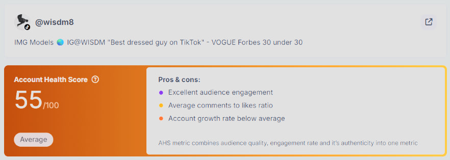
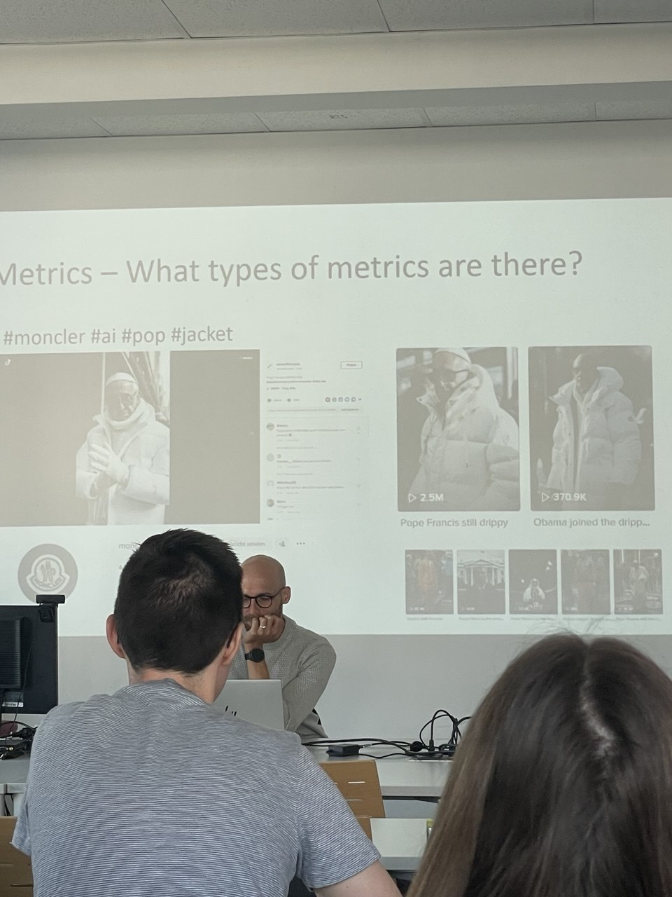

Featured Work

Post 4
From Ad Metrics to Influencer Analytics: The Wisdom Kaye Report
Analysing TikTok creator Wisdom Kaye with Hypeauditor - what a marketing analytics task looks like from the other side of the industry.
Read Story
Post 3
Looking Back on Project Work 1
Reflecting on my first project - building a message architecture for my own freelance brand.
Read Story
Post 2
Same Field, New Things to Learn
Five years in agencies didn't stop Monitoring & Web Analytics from teaching me something new.
Read Story
Post 1
From Ads to Strategy: A New Chapter in Graz
How I moved from programmatic advertising in Moscow to content strategy in Graz.
Read Story